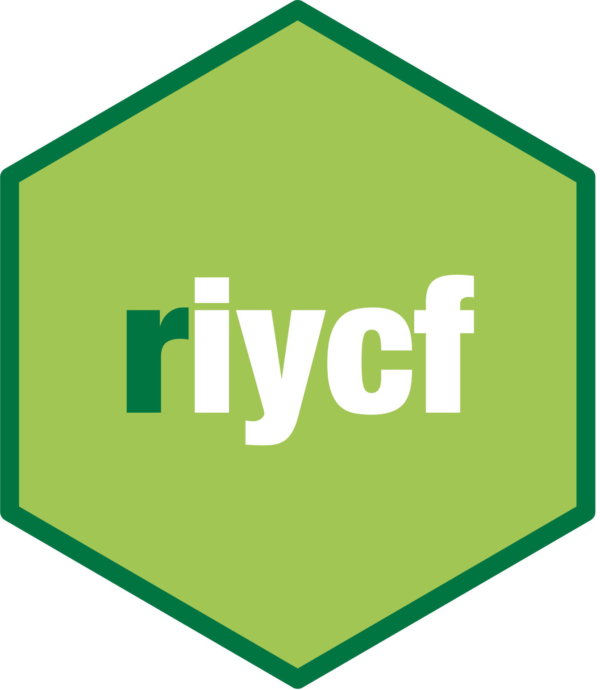

WHO IYCF Questionnaire XLS Forms
Nicholus Tint Zaw
Source:vignettes/iycf_xlsform.Rmd
iycf_xlsform.RmdPurpose
To provide ready-to-use WHO IYCF standard questionnaire in XLSForm standard for computer-assisted personal interviews (CAPI)-based data collection such as OpenDataKit, SurveyCTO, ONA, or KoboToolbox.
This guide provides information on:
which form will be suitable for what type of data collection purpose; and,
what type of questionnaire administration approach will be used for IYCF data collection.
This guide does not cover:
how to create a questionnaire in XLSForm standard; or,
how to use the form in the respective XLSForm-supported CAPI platform.
Types of forms
Based on form structure and approach to questionnaire administration, there are four types of IYCF form.
data.frame(
structure_1 = c(
"IYCF questionnaire module within a household survey - open recall",
"IYCF questionnaire module within a household survey - list-based"
),
structure_2 = c(
"IYCF questionnaire module only - open recall",
"IYCF questionnaire module only - list-based"
)
) |>
(\(x)
{
row.names(x) <- c("Open recall approach", "List-based approach")
x
}
)() |>
knitr::kable(col.names = c("Household survey format", "IYCF survey only"))| Household survey format | IYCF survey only | |
|---|---|---|
| Open recall approach | IYCF questionnaire module within a household survey - open recall | IYCF questionnaire module only - open recall |
| List-based approach | IYCF questionnaire module within a household survey - list-based | IYCF questionnaire module only - list-based |
- Open recall questionnaire
Food consumption questions are administered by asking the respondent all that their child ate for each meal time yesterday from the morning the child woke up to the night before the child went to sleep.
- List-based questionnaire
This approach directly asks the respondent whether their child ate the individual food groups mentioned in the questionnaire.
Both approaches contain the same questions with the only difference being the display format based on the questionnaire’s approach to administration. These two approaches are described in detail in page 28 of the WHO IYCF indicator guidelines.
The IYCF forms in XLSForm standard can be found in this GitHub repository.
hhsvy_iycf_open_recall- IYCF questionnaire module within a household survey using open recall approachhhsvy_iycf_list_based- IYCF questionnaire module within a household survey using list-based approachiycf_list_based- IYCF questionnaire module only using open recall approachiycf_open_recall- IYCF questionnaire module only using list-based approach
Feedback and issues
For feedback, questions, and/or bugs, report the issues here.